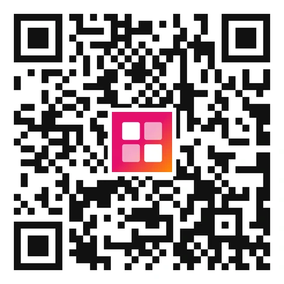
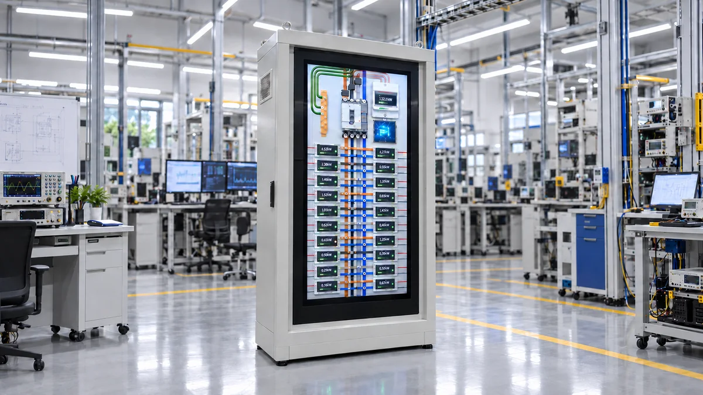
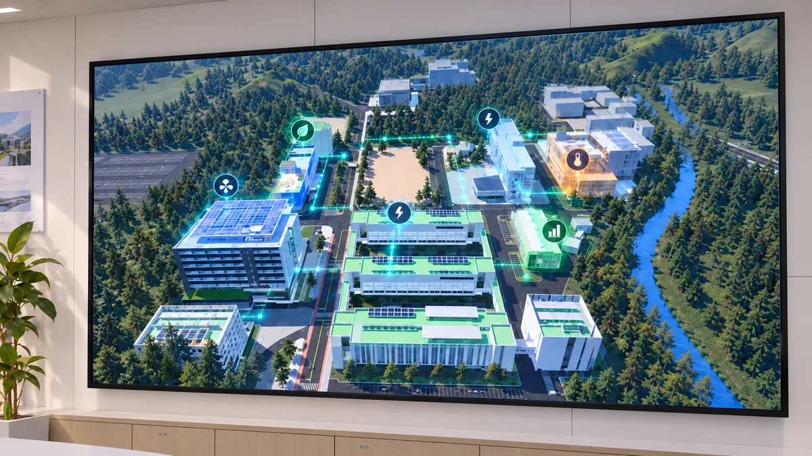
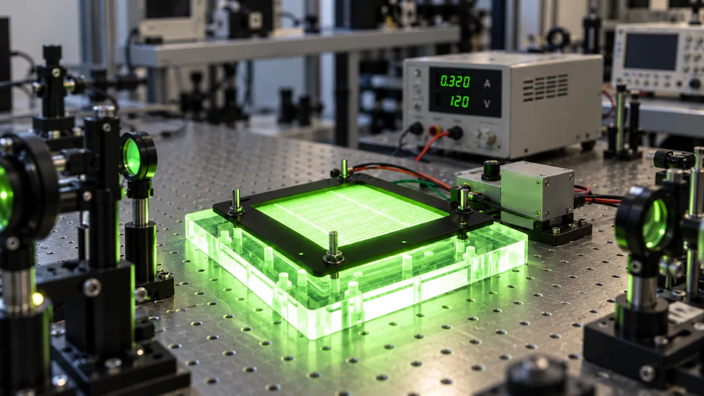
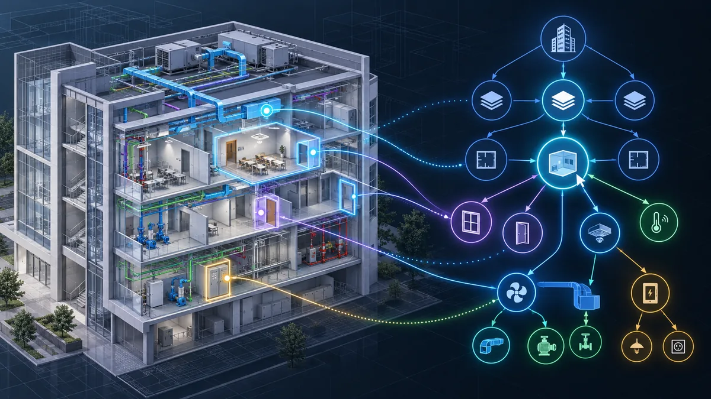
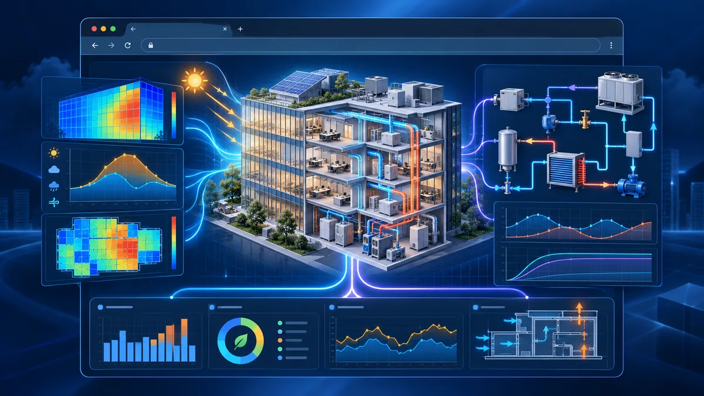
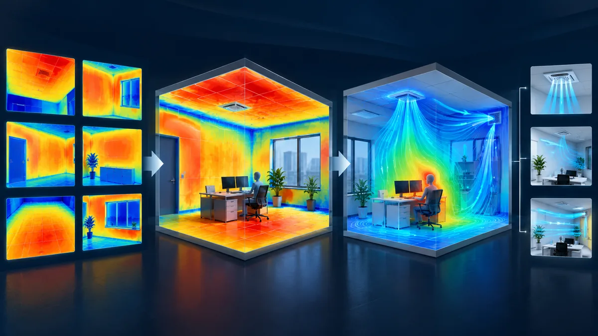
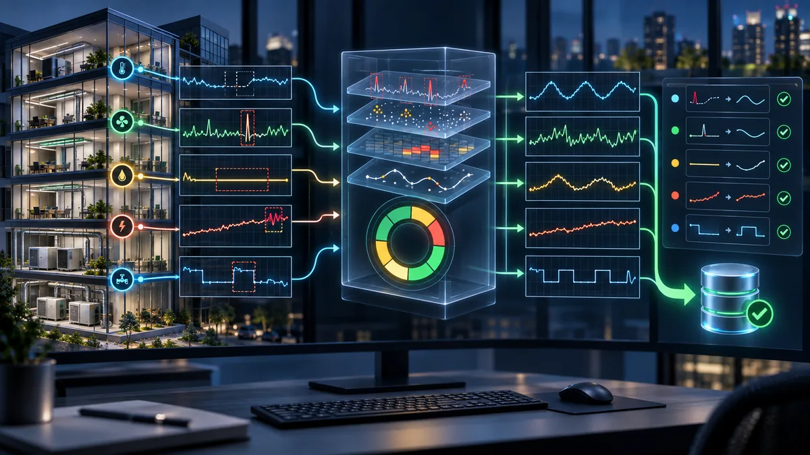
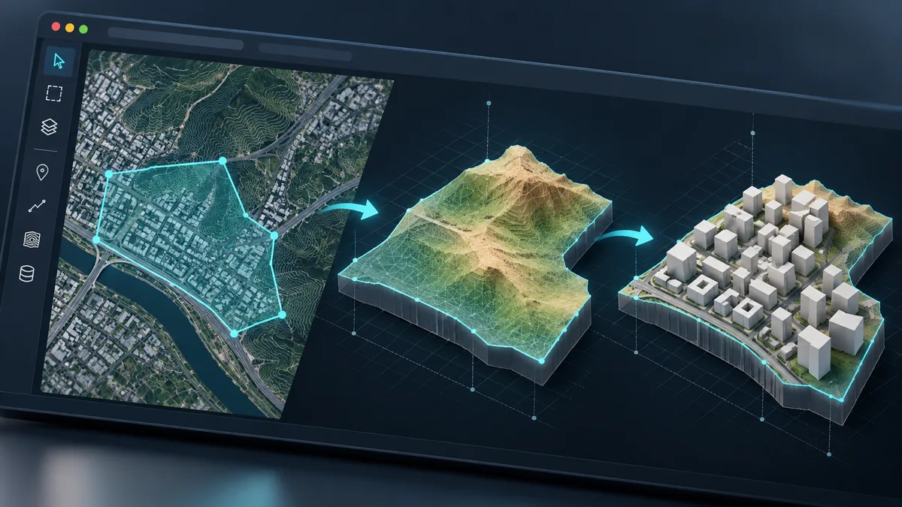

TECHNOLOGY SHOWCASE·BUILDING COGNITION LAB
Perceive, Reason, and Act — 건물이 자신의 상태를 스스로 인지하고, 다음 상태를 예측해 무엇을 해야 되는지 판단하고 행동하게 만드는 기술들을 모았습니다. 한국에너지기술연구원 Building Cognition Lab.
TECHNOLOGY SHOWCASE

NEUROMORPHIC PANELBOARD · AUTONOMOUS EMS
분전반 메인 채널 하나의 전력 시계열에서 서브부하를 역추정하고, 다음 상태를 예측해 꺼도 되는 스위치를 스스로 고른다. 2개 동 6개 분전반에서 15.6% 에너지절감을 확인했다.
자세히 보기
DIGITAL TWIN BEMS · AUTONOMOUS OPERATION
캠퍼스 9개 동에 계측장비 124대를 심고, 디지털 트윈 위에서 에너지와 실내환경을 함께 본다. 그린동 리빙랩 재실 기반 제어 실증에서 일평균 69.6 → 21.6 kWh, 68.9% 절감을 확인했다.
자세히 보기
PHOTOTHERMAL FILTER · AUTONOMOUS ERV
필터 위에서 빛으로 열을 내 공기 중 병원체를 살균하고, 환기장치가 실내환경과 에너지를 스스로 저울질해 운전한다. 대장균 6-log 사멸, 금 대비 1/450 원가의 광열 코팅.
자세히 보기
RVT TO KNOWLEDGE GRAPH
Revit 모델을 지식 그래프로 변환해 부재·시스템·공간의 관계를 탐색 가능한 형태로 펼쳐 보인다.
공개 준비중
WEB-BASED ENERGY SIMULATION
EnergyPlus와 OpenModelica를 웹에서 구동해, 건물 에너지 해석을 브라우저만으로 수행하는 도구.
공개 준비중
THERMAL IMAGE TO VENTILATION
실내 6면의 적외선 열화상을 경계조건으로 삼아 환기 성능을 해석한다. PMV·PPD, 공기연령, 드래프트율을 산출하고 개선 전략까지 제안한다.
공개 준비중
ISO/IEC 5259 DATA QUALITY
건물에너지 실측 데이터의 품질을 ISO/IEC 5259 기준으로 진단한다. 품질특성별 점수와 시계열 특화 진단, 개선 권고와 정제 데이터를 함께 낸다.
공개 준비중
LOD1 TERRAIN & MASS MODELING
지도 위 영역을 지정하면 지형과 건물 매스를 LOD1 3D 모델로 생성하는 데스크톱 도구.
공개 준비중에너지가 어떻게 쓰이고 있는지, 실내 환경은 어떤 상태인지, 어디에 위험이 쌓이고 있는지
스스로 인지하고 판단해 실행하는 건물로의 전환 — Building Cognition Lab이 함께합니다.